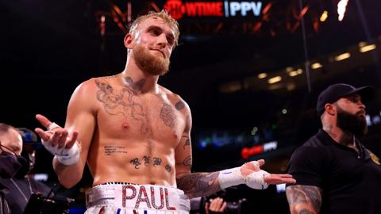
Originally a youtube personality Jake Paul took his first steps into crossover boxing on August 25th, 2018. After winning his first fight against fellow youtuber Deji he proceeded to fight against another youtuber by the name of AnesonGib, after that fight Jake began progressively taking on more credible opponents such as retired MMA fighters and low level boxers which he got backlash for. Jake is also the co-founder of the boxing promotion company Most Valuable promotions(MVP) which focuses on trying to get fighters better payment than what they currently receive.
In MVP Jake Paul has fought opponents such as Tommy Fury, Anderson Silva, and Tyron Woodley. He has also signed multi division champion Amanda Serrano. Jake paul has made the mission of his promotion company to have fighters get better pay and to show many talented prospective fighters to the world through his “Most Valuable Prospect” cards.
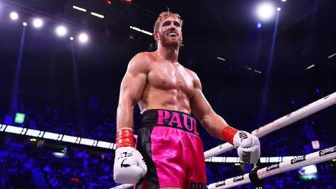
Logan Paul, a YouTuber and internet personality, helped promote crossover boxing. He faced KSI twice, the first resulting in a draw and the second in a loss. In 2021, he faced Floyd Mayweather Jr. in an exhibition bout and in 2023 bringing more eyes to the scene he had one more fight with Dillon Dannis. While he is no longer active in boxing, he is still involved with the sport and currently competes in WWE.
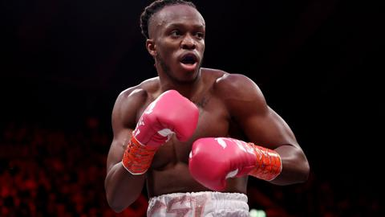
KSI is a British YouTuber and musician who played a foundational role in influencer boxing. He fought Joe Weller in the first major YouTube boxing event in 2018, and later fought Logan Paul twice.Since then KSI co-founded Misfits Boxing, a promotional company focused on crossover boxing events in partnership with DZAN. Since the creation of his company he has fought 4 times and the company has put on over 15 events since 2023.
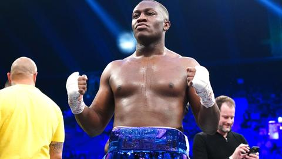
Deji is a British YouTuber and the younger brother of KSI. He made his boxing debut in 2018 against Jake Paul, which he lost and he lost two times after that leaving the fans disappointed but also invested in the possibility of him redeeming himself. He has since fought in several crossover boxing events, earning wins against Fousey and Swarmz. In 2022, Deji faced Floyd Mayweather Jr. in an exhibition bout which was monumental for the crossover scene.
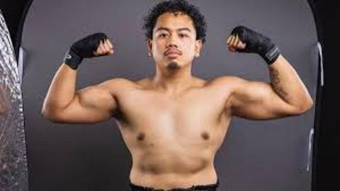
Salt Papi is a British-Filipino TikTok influencer who entered the crossover boxing scene in 2022. Known for his impressive footwork and boxing ability, he gained attention for wins over Andy Warski and Josh Brueckner in Misfits Boxing events as is known to be one of Misfits best fighters.
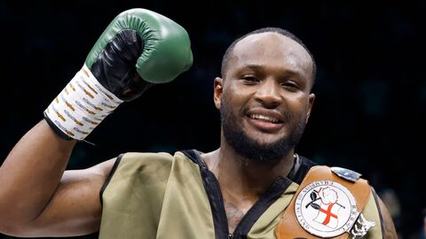
Viddal Riley is a British professional boxer and former amateur standout. He initially gained attention as KSI’s boxing coach during KSI’s early bouts, including the fights against Logan Paul. Riley is now signed with Boxxer and holds an undefeated professional record. Unlike most of the people mentioned here he doesn't fight in the crossover boxing scene and instead stuck to traditional boxing, but his words carry a lot of weight due to him starting off in the scene as KSI’s boxing coach and a respected figure in the scene.
Viddal also shares a podcast with fellow coach Leon Wills, where they speak on crossover boxing news, and give their opinions. This podcast earned them even more respect as they have never held back from speaking their truth regardless of who it offends.
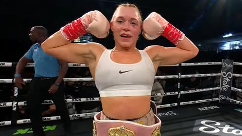
Elle Brooke is a British influencer and content creator who has competed in several Misfits Boxing events. She debuted in 2022 displaying great potential and knockout power. She has continued to fight within the influencer boxing circuit, contributing to the growth of women’s participation in the sport.
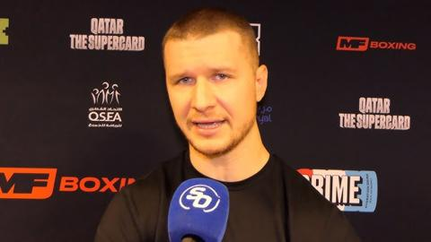
Wade Plemons is a combat sports analyst and commentator specializing in influencer boxing. He is known for hosting interviews, breaking down fights, and previously providing analysis for Misfits Boxing events. He now works with multiple different companies, commentating on their fights such as Most Valuable Promotions, Kingpyn boxing previously, and Bare Knuckle Fighting Championship(BKFC). On January 18th, 2025, Wade had his first bout after years of commentary, with him coming out victorious proving to many doubters that besides his ability to commentate he can also put on a display in the ring. Plemons is considered one of the most credible media figures in this niche.
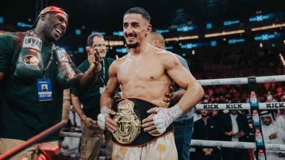
AnEsonGib is a British YouTuber who has participated in numerous influencer boxing matches. He fought Jake Paul in 2020 and later earned notable wins over Tayler Holder and Austin McBroom. Fighting across multiple promotions, his aggressive style and experience have made him a veteran of the scene with him being one of the most respected fighters due to his consistent presence in the scene and his continuous high level performances every time he has stepped into the ring for a fight since his loss to Jake Paul in 2020.
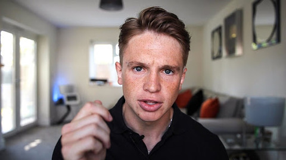
Joe Weller is a British YouTuber who participated in the first widely viewed YouTube boxing match against KSI in 2018. Although he lost the fight, the event set the stage for the influencer boxing scene. Weller has not returned to the ring since but is often credited with being the main reason why people began to see potential in the sport.
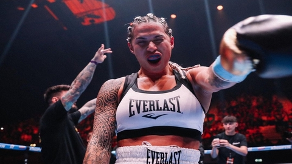
Jully Poka began to gain noteriety as a fitness inluencer and was then drafted into the Kingpyn boxing tournament as one of the female fighters in 2022. She is known for her impressive footwork, boxing ability, and explosive power. She gained attention for wins over Elle Brooke and Daniella Hemsley in Kingpyn Boxing events. She has since fought in several crossover boxing events further dominating the feild and solidifying her position as a prominent fighter in the space.
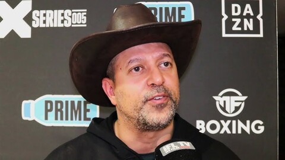
Mams Taylor is a boxing promoter and KSI’s manager. He co-founded Misfits Boxing and plays a central role in the organization and promotion of Crossover boxing events. He has been instrumental in shaping the business and promotional side of crossover boxing for the Misfits boxing promotion company which is the staple crossover boxing promotion company at the time of writing (2025).
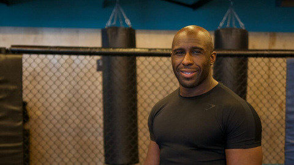
Leon Wills is a British boxing coach known for training crossover fighters and professional fighters. He has trained a variety of clients including Deji, KSI, Gib, and Elle Brooke. He focuses on developing technical skill and physical conditioning among crossover boxing participants. He also shares a podcast with professional boxer and ex boxing coach Viddal Riley where they give their opinions on current events in crossover boxing leading to them gaining a massive influence over the scene as their words carry weight in regards to the crossover scene.
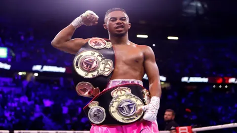
Deen The Great, real name Nurideen Shabazz, is an American YouTuber and a breakout star in the crossover boxing scene, best known for his performances under the Misfits Boxing promotion. He made his debut in 2022 and quickly gained attention for his speed, confidence, and showman-like approach in the ring. Deen first captured the Misfits lightweight title after a dramatic fight against Walid Sharks, where he overcame two knockdowns to win by third-round TKO. This win helped solidify him as one of the top influencer fighters, not just for his skill, but for his resilience under pressure.
Since then, Deen has successfully defended his title in multiple high-profile bouts, including a heated rematch with Walid Sharks and a dominant TKO victory over Dave Fogarty in 2024. He also made headlines for teaming up with Walid in a tag-team boxing match, a novelty format introduced by Misfits which ended in a post-fight scuffle between the two teammates. Known for calling out big names like Ryan Garcia and Shakur Stevenson, Deen continues to blur the lines between influencer and professional boxing with both competitive skill and crowd-pulling charisma.